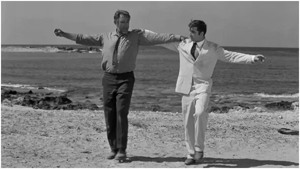
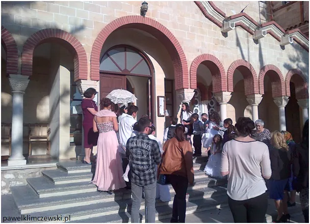
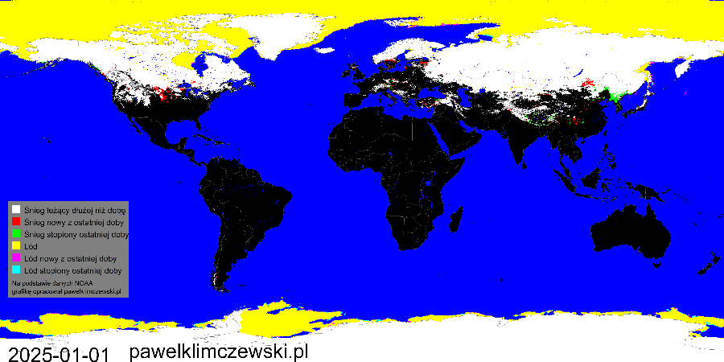

“Trzeciego lutego! … Czujesz go, szefie?”
Grek Zorba, postać tak doskonale znana, skupiał w swej osobowości esencję zachodniej kultury prostych ludzi. Tradycja, odwaga i radość życia, to zapamiętałem na dziesiątki lat, bo czytałem Kazantzakisa przed maturą. W dzieciństwie rodzice co roku organizowali wakacje w Bułgarii, niestety bardziej południowe kraje były za "Żelazną Kurtyną" i tylko w dobrej książce mogliśmy poznać zapach tamtejszego powietrza. Zapamiętałem dobrze to zdanie Zorby, bo było bardzo ciepłe i pachnące Afryką, gdy na naszych ulicach zalegały stosy śniegu:
"Trzeciego lutego! W dzień świętego Symeona! Wtedy właśnie wieje pierwszy, ciepły powiew wiatru z Afryki. Czujesz go, szefie? To zwiastun wiosny!"

Kreta leży na szlaku ciepłego powietrza, które zwiastuje w Europie wiosnę. Dokładna data powtarzalności tego zjawiska przypomina nam majowe dni "Trzech Ogrodników", gdy to atlantyckie cyrkulacje zataczają wielkie wiry co roku i od wieków w tym samym okresie przynoszą nam po przymrozkach lato.
Zatem trzymamy Greka Zorbę za słowo i odliczamy do 3 lutego, gdy tydzień później w Polsce powinno pojawić się przedwiośnie. Oczywiście pierwszy zazna tego Śląsk, gdzie przez Bramę Morawską powietrze z południa dociera najszybciej.

Póki co, piękny rajd zimy zasupłuje śniegiem północne kontynenty, paradoksalnie unikając w ten sposób większego oziębienia, bo śnieg powstaje, gdy mokre powietrze z południa podgrzewa wyziębione arktyczne przestrzenie.
Paweł Klimczewski